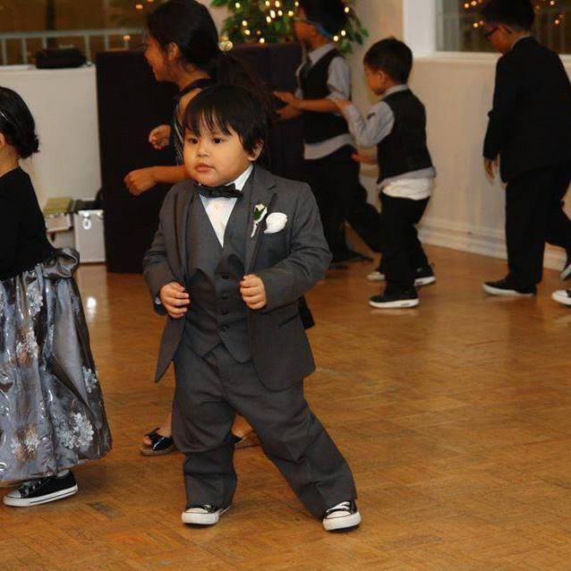

ICT 9 E-PORTFOLIO
HOME PAGE
00. Home Page
.
01. Lessons
02. 1st Quarter Activities
03. Reflection
Hello! My name is Santino Castillo and I'm from 9-Family of LPSci.
I am 14 years old and my birthday is on September 26, 2010. I have a lot of likes and hobbies.

My Favorites!
My Hobbies
Dancing
Writing
Cramming
My Favorite Artists
Laufey
Lyn Lapid
Sabrina Carpenter
My Favorite People
Family
Friends
Teachers
My Favorite Song!
Palagi - TJ Monterde
My Likes & Dislikes!
Santi's Table
Item Type
Likes
Dislikes
I. Foods
Mangoes, Oranges, Grapes
Durian, Rambutan, Apples
II. Subjects
English, MAPEH, TLE/ICT
None!
III. Animals
Bunnies, Cats, Dogs
Snakes, Bugs, Coyotes